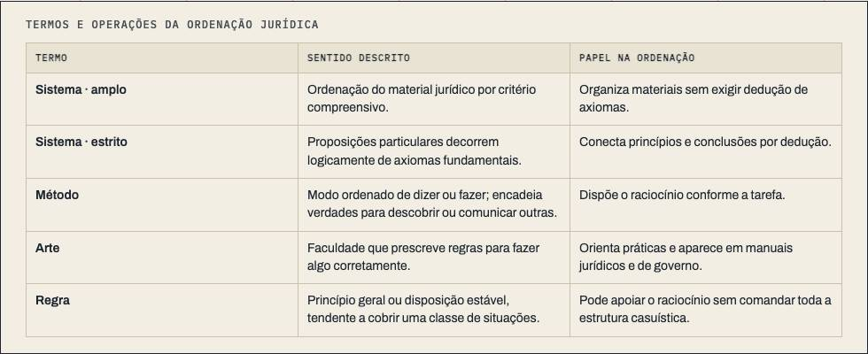

Metodologia Jurídica · aula-09
Casuísmo e sistema III
2,293 words, half a sitting · 6 chapters · 1 figure, 0 saying what they do · nothing quoted from a source · a quiz
built on1.2
on30/09
byCodex
generation1 Everglades
commits18
how it's built
- 1A ideia de sistema avançou sem apagar a prática casuística217 w
- 2As críticas começaram dentro da própria tradição538 w
- 3O projeto sistemático encontrou limites na prática389 w
- 4“Sistema”, “método”, “arte” e “regra” marcam etapas diferentes401 w
- 5Roma ofereceu precedentes, não um sistema pronto308 w
- 6Teste350 w
its figures

what it quotes
- Nothing quoted on the page.
the course, as I read it
A reading course that reads well, with four lessons missing.
its checks
negated inference 1.2 / 0.5
gap talk 0.0 / 0.1
contrast tail 0.4 / 0.5
staged reveal 5.0 / 8.0
its life
- 15/10The turn: a folded corner and ⌘⇧K turn every page to its backstage and back
- 15/10Metodologia: each lesson on the course axis
- 15/10First screen: one-line titles, marker yellow, Controle card by form, no past dates
- 07/10Paper scrolls with the text in portrait, pinned elsewhere
- 06/10WIDE-4: reading column halfway (1,083 px)
- 06/10FRONT-C1 + WIDE-3: Controle planta on phones; standalone desktop text ~2x wide
- 05/10WIDE-2: centred reading column on desktop for standalone text
- 05/10WIDE-1: wider standalone prose on desktop (76ch at >=1100px)
nextone sitting · source blocks · scrolly panels · house layer · prepared sources · lesson plan (my note of 14/10: keep · source blocks)